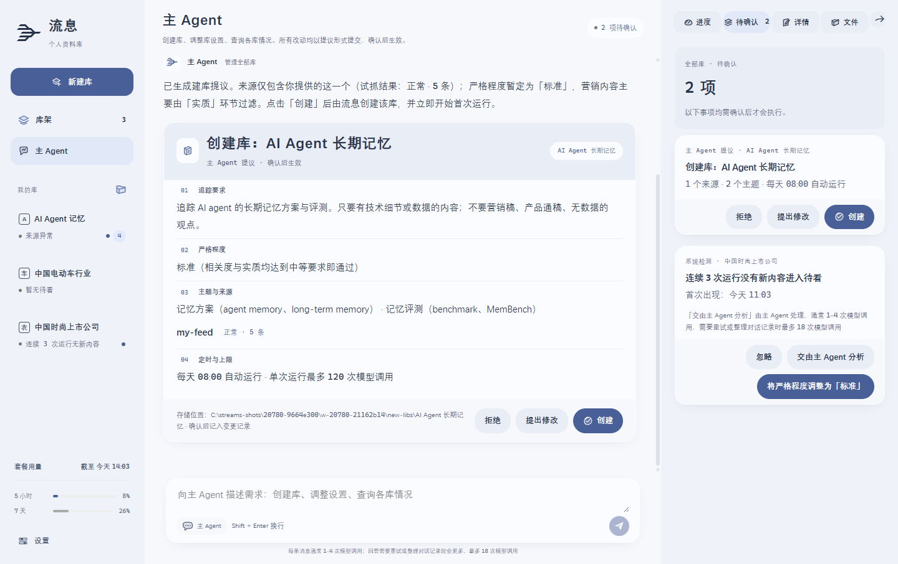
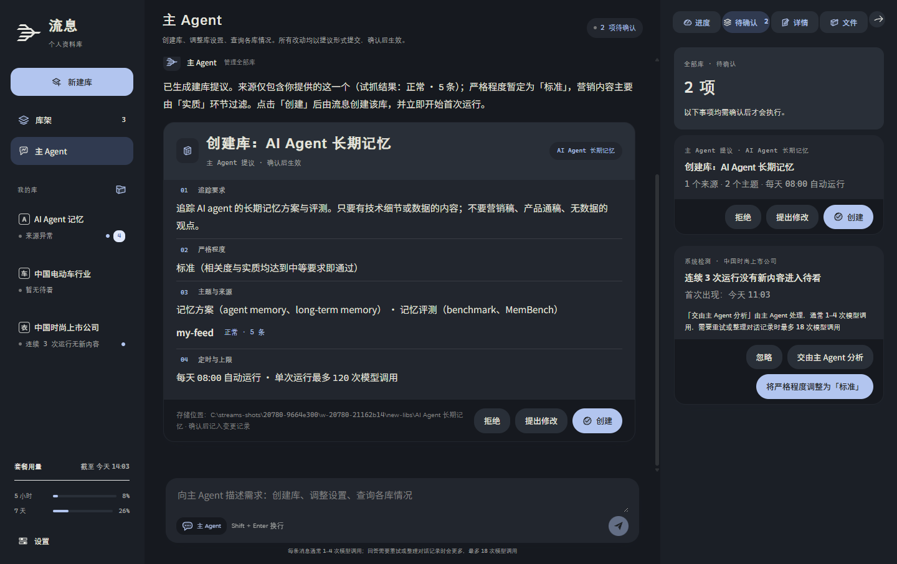

首次打开 firstrun
首次打开 · 精密国际主义 firstrun · precision 回到顶上
首次打开 · 澄明玻璃 firstrun · glass 回到顶上
首次打开 · 研究对话 firstrun · research 回到顶上
首次打开 · 单线黑白 firstrun · monoline 回到顶上
连接选择 connect
连接选择 · 精密国际主义 connect · precision 回到顶上
连接选择 · 澄明玻璃 connect · glass 回到顶上
连接选择 · 研究对话 connect · research 回到顶上
连接选择 · 单线黑白 connect · monoline 回到顶上
库架 shelf
库架 · 精密国际主义 shelf · precision 回到顶上
库架 · 澄明玻璃 shelf · glass 回到顶上
库架 · 研究对话 shelf · research 回到顶上
库架 · 单线黑白 shelf · monoline 回到顶上
主Agent agent
主Agent · 精密国际主义 agent · precision 回到顶上
主Agent · 澄明玻璃 agent · glass 回到顶上
设计稿 · 浅色 ../../design/redesign/source/07-模板版/截图/澄明玻璃/主Agent.png
应用 · 浅色 glass-light/agent.png
应用 · 深色 glass-dark/agent.png
主Agent · 研究对话 agent · research 回到顶上
主Agent · 单线黑白 agent · monoline 回到顶上
新建库 new
新建库 · 精密国际主义 new · precision 回到顶上
新建库 · 澄明玻璃 new · glass 回到顶上
设计稿 · 浅色 ../../design/redesign/source/07-模板版/截图/澄明玻璃/新建库.png应用 · 浅色 glass-light/new.png应用 · 深色 glass-dark/new.png
新建库 · 研究对话 new · research 回到顶上
设计稿 · 浅色 ../../design/redesign/source/07-模板版/截图/研究对话/新建库.png应用 · 浅色 research-light/new.png应用 · 深色 research-dark/new.png
新建库 · 单线黑白 new · monoline 回到顶上
设计稿 · 浅色 ../../design/redesign/source/07-模板版/截图/单线黑白/新建库.png应用 · 浅色 monoline-light/new.png应用 · 深色 monoline-dark/new.png
待看 inbox
待看 · 精密国际主义 inbox · precision 回到顶上
设计稿 · 浅色 ../../design/redesign/source/07-模板版/截图/精密国际主义/待看.png应用 · 浅色 precision-light/inbox.png应用 · 深色 precision-dark/inbox.png
待看 · 澄明玻璃 inbox · glass 回到顶上
设计稿 · 浅色 ../../design/redesign/source/07-模板版/截图/澄明玻璃/待看.png应用 · 浅色 glass-light/inbox.png应用 · 深色 glass-dark/inbox.png
待看 · 研究对话 inbox · research 回到顶上
设计稿 · 浅色 ../../design/redesign/source/07-模板版/截图/研究对话/待看.png应用 · 浅色 research-light/inbox.png应用 · 深色 research-dark/inbox.png
待看 · 单线黑白 inbox · monoline 回到顶上
设计稿 · 浅色 ../../design/redesign/source/07-模板版/截图/单线黑白/待看.png应用 · 浅色 monoline-light/inbox.png应用 · 深色 monoline-dark/inbox.png
待看空着时 empty
待看空着时 · 精密国际主义 empty · precision 回到顶上
设计稿 · 浅色 ../../design/redesign/source/07-模板版/截图/精密国际主义/待看空着时.png应用 · 浅色 precision-light/empty.png应用 · 深色 precision-dark/empty.png
待看空着时 · 澄明玻璃 empty · glass 回到顶上
设计稿 · 浅色 ../../design/redesign/source/07-模板版/截图/澄明玻璃/待看空着时.png应用 · 浅色 glass-light/empty.png应用 · 深色 glass-dark/empty.png
待看空着时 · 研究对话 empty · research 回到顶上
设计稿 · 浅色 ../../design/redesign/source/07-模板版/截图/研究对话/待看空着时.png应用 · 浅色 research-light/empty.png应用 · 深色 research-dark/empty.png
待看空着时 · 单线黑白 empty · monoline 回到顶上
设计稿 · 浅色 ../../design/redesign/source/07-模板版/截图/单线黑白/待看空着时.png应用 · 浅色 monoline-light/empty.png应用 · 深色 monoline-dark/empty.png
运行与排队 run
运行与排队 · 精密国际主义 run · precision 回到顶上
设计稿 · 浅色 ../../design/redesign/source/07-模板版/截图/精密国际主义/运行与排队.png应用 · 浅色 precision-light/run.png应用 · 深色 precision-dark/run.png
运行与排队 · 澄明玻璃 run · glass 回到顶上
设计稿 · 浅色 ../../design/redesign/source/07-模板版/截图/澄明玻璃/运行与排队.png应用 · 浅色 glass-light/run.png应用 · 深色 glass-dark/run.png
运行与排队 · 研究对话 run · research 回到顶上
设计稿 · 浅色 ../../design/redesign/source/07-模板版/截图/研究对话/运行与排队.png应用 · 浅色 research-light/run.png应用 · 深色 research-dark/run.png
运行与排队 · 单线黑白 run · monoline 回到顶上
设计稿 · 浅色 ../../design/redesign/source/07-模板版/截图/单线黑白/运行与排队.png应用 · 浅色 monoline-light/run.png应用 · 深色 monoline-dark/run.png
连接出问题 expired
连接出问题 · 精密国际主义 expired · precision 回到顶上
设计稿 · 浅色 ../../design/redesign/source/07-模板版/截图/精密国际主义/连接出问题.png应用 · 浅色 precision-light/expired.png应用 · 深色 precision-dark/expired.png
连接出问题 · 澄明玻璃 expired · glass 回到顶上
设计稿 · 浅色 ../../design/redesign/source/07-模板版/截图/澄明玻璃/连接出问题.png应用 · 浅色 glass-light/expired.png应用 · 深色 glass-dark/expired.png
连接出问题 · 研究对话 expired · research 回到顶上
设计稿 · 浅色 ../../design/redesign/source/07-模板版/截图/研究对话/连接出问题.png应用 · 浅色 research-light/expired.png应用 · 深色 research-dark/expired.png
连接出问题 · 单线黑白 expired · monoline 回到顶上
设计稿 · 浅色 ../../design/redesign/source/07-模板版/截图/单线黑白/连接出问题.png应用 · 浅色 monoline-light/expired.png应用 · 深色 monoline-dark/expired.png
资料库 library
资料库 · 精密国际主义 library · precision 回到顶上
设计稿 · 浅色 ../../design/redesign/source/07-模板版/截图/精密国际主义/资料库.png应用 · 浅色 precision-light/library.png应用 · 深色 precision-dark/library.png
资料库 · 澄明玻璃 library · glass 回到顶上
设计稿 · 浅色 ../../design/redesign/source/07-模板版/截图/澄明玻璃/资料库.png应用 · 浅色 glass-light/library.png应用 · 深色 glass-dark/library.png
资料库 · 研究对话 library · research 回到顶上
设计稿 · 浅色 ../../design/redesign/source/07-模板版/截图/研究对话/资料库.png应用 · 浅色 research-light/library.png应用 · 深色 research-dark/library.png
资料库 · 单线黑白 library · monoline 回到顶上
设计稿 · 浅色 ../../design/redesign/source/07-模板版/截图/单线黑白/资料库.png应用 · 浅色 monoline-light/library.png应用 · 深色 monoline-dark/library.png
图谱 graph
图谱 · 精密国际主义 graph · precision 回到顶上
设计稿 · 浅色 ../../design/redesign/source/07-模板版/截图/精密国际主义/图谱.png应用 · 浅色 precision-light/graph.png应用 · 深色 precision-dark/graph.png
图谱 · 澄明玻璃 graph · glass 回到顶上
设计稿 · 浅色 ../../design/redesign/source/07-模板版/截图/澄明玻璃/图谱.png应用 · 浅色 glass-light/graph.png应用 · 深色 glass-dark/graph.png
图谱 · 研究对话 graph · research 回到顶上
设计稿 · 浅色 ../../design/redesign/source/07-模板版/截图/研究对话/图谱.png应用 · 浅色 research-light/graph.png应用 · 深色 research-dark/graph.png
图谱 · 单线黑白 graph · monoline 回到顶上
设计稿 · 浅色 ../../design/redesign/source/07-模板版/截图/单线黑白/图谱.png应用 · 浅色 monoline-light/graph.png应用 · 深色 monoline-dark/graph.png
编辑笔记 edit
编辑笔记 · 精密国际主义 edit · precision 回到顶上
设计稿 · 浅色 ../../design/redesign/source/07-模板版/截图/精密国际主义/编辑笔记.png应用 · 浅色 precision-light/edit.png应用 · 深色 precision-dark/edit.png
编辑笔记 · 澄明玻璃 edit · glass 回到顶上
设计稿 · 浅色 ../../design/redesign/source/07-模板版/截图/澄明玻璃/编辑笔记.png应用 · 浅色 glass-light/edit.png应用 · 深色 glass-dark/edit.png
编辑笔记 · 研究对话 edit · research 回到顶上
设计稿 · 浅色 ../../design/redesign/source/07-模板版/截图/研究对话/编辑笔记.png应用 · 浅色 research-light/edit.png应用 · 深色 research-dark/edit.png
编辑笔记 · 单线黑白 edit · monoline 回到顶上
设计稿 · 浅色 ../../design/redesign/source/07-模板版/截图/单线黑白/编辑笔记.png应用 · 浅色 monoline-light/edit.png应用 · 深色 monoline-dark/edit.png
问库 ask
问库 · 精密国际主义 ask · precision 回到顶上
设计稿 · 浅色 ../../design/redesign/source/07-模板版/截图/精密国际主义/问库.png应用 · 浅色 precision-light/ask.png应用 · 深色 precision-dark/ask.png
问库 · 澄明玻璃 ask · glass 回到顶上
设计稿 · 浅色 ../../design/redesign/source/07-模板版/截图/澄明玻璃/问库.png应用 · 浅色 glass-light/ask.png应用 · 深色 glass-dark/ask.png
问库 · 研究对话 ask · research 回到顶上
设计稿 · 浅色 ../../design/redesign/source/07-模板版/截图/研究对话/问库.png应用 · 浅色 research-light/ask.png应用 · 深色 research-dark/ask.png
问库 · 单线黑白 ask · monoline 回到顶上
设计稿 · 浅色 ../../design/redesign/source/07-模板版/截图/单线黑白/问库.png应用 · 浅色 monoline-light/ask.png应用 · 深色 monoline-dark/ask.png
来源与要求 sources
来源与要求 · 精密国际主义 sources · precision 回到顶上
设计稿 · 浅色 ../../design/redesign/source/07-模板版/截图/精密国际主义/来源与要求.png应用 · 浅色 precision-light/sources.png应用 · 深色 precision-dark/sources.png
来源与要求 · 澄明玻璃 sources · glass 回到顶上
设计稿 · 浅色 ../../design/redesign/source/07-模板版/截图/澄明玻璃/来源与要求.png应用 · 浅色 glass-light/sources.png应用 · 深色 glass-dark/sources.png
来源与要求 · 研究对话 sources · research 回到顶上
设计稿 · 浅色 ../../design/redesign/source/07-模板版/截图/研究对话/来源与要求.png应用 · 浅色 research-light/sources.png应用 · 深色 research-dark/sources.png
来源与要求 · 单线黑白 sources · monoline 回到顶上
设计稿 · 浅色 ../../design/redesign/source/07-模板版/截图/单线黑白/来源与要求.png应用 · 浅色 monoline-light/sources.png应用 · 深色 monoline-dark/sources.png
高级设置 advanced
高级设置 · 精密国际主义 advanced · precision 回到顶上
设计稿 · 浅色 ../../design/redesign/source/07-模板版/截图/精密国际主义/高级设置.png应用 · 浅色 precision-light/advanced.png应用 · 深色 precision-dark/advanced.png
高级设置 · 澄明玻璃 advanced · glass 回到顶上
设计稿 · 浅色 ../../design/redesign/source/07-模板版/截图/澄明玻璃/高级设置.png应用 · 浅色 glass-light/advanced.png应用 · 深色 glass-dark/advanced.png
高级设置 · 研究对话 advanced · research 回到顶上
设计稿 · 浅色 ../../design/redesign/source/07-模板版/截图/研究对话/高级设置.png应用 · 浅色 research-light/advanced.png应用 · 深色 research-dark/advanced.png
高级设置 · 单线黑白 advanced · monoline 回到顶上
设计稿 · 浅色 ../../design/redesign/source/07-模板版/截图/单线黑白/高级设置.png应用 · 浅色 monoline-light/advanced.png应用 · 深色 monoline-dark/advanced.png
移除该库 remove
移除该库 · 精密国际主义 remove · precision 回到顶上
 设计稿 · 浅色
设计稿 · 浅色 ../../design/redesign/source/07-模板版/截图/精密国际主义/移除该库.png应用 · 浅色 precision-light/remove.png应用 · 深色 precision-dark/remove.png移除该库 · 澄明玻璃 remove · glass 回到顶上
 设计稿 · 浅色
设计稿 · 浅色 ../../design/redesign/source/07-模板版/截图/澄明玻璃/移除该库.png应用 · 浅色 glass-light/remove.png应用 · 深色 glass-dark/remove.png移除该库 · 研究对话 remove · research 回到顶上
 设计稿 · 浅色
设计稿 · 浅色 ../../design/redesign/source/07-模板版/截图/研究对话/移除该库.png应用 · 浅色 research-light/remove.png应用 · 深色 research-dark/remove.png移除该库 · 单线黑白 remove · monoline 回到顶上
 设计稿 · 浅色
设计稿 · 浅色 ../../design/redesign/source/07-模板版/截图/单线黑白/移除该库.png应用 · 浅色 monoline-light/remove.png应用 · 深色 monoline-dark/remove.png设置 settings
设置 · 精密国际主义 settings · precision 回到顶上
 设计稿 · 浅色
设计稿 · 浅色 ../../design/redesign/source/07-模板版/截图/精密国际主义/设置.png应用 · 浅色 precision-light/settings.png应用 · 深色 precision-dark/settings.png设置 · 澄明玻璃 settings · glass 回到顶上
 设计稿 · 浅色
设计稿 · 浅色 ../../design/redesign/source/07-模板版/截图/澄明玻璃/设置.png应用 · 浅色 glass-light/settings.png应用 · 深色 glass-dark/settings.png设置 · 研究对话 settings · research 回到顶上
 设计稿 · 浅色
设计稿 · 浅色 ../../design/redesign/source/07-模板版/截图/研究对话/设置.png应用 · 浅色 research-light/settings.png应用 · 深色 research-dark/settings.png设置 · 单线黑白 settings · monoline 回到顶上
 设计稿 · 浅色
设计稿 · 浅色 ../../design/redesign/source/07-模板版/截图/单线黑白/设置.png应用 · 浅色 monoline-light/settings.png应用 · 深色 monoline-dark/settings.png输入 API key apikey
输入 API key · 精密国际主义 apikey · precision 回到顶上
 设计稿 · 浅色
设计稿 · 浅色 ../../design/redesign/source/07-模板版/截图/精密国际主义/输入API-key.png应用 · 浅色 precision-light/apikey.png应用 · 深色 precision-dark/apikey.png输入 API key · 澄明玻璃 apikey · glass 回到顶上
 设计稿 · 浅色
设计稿 · 浅色 ../../design/redesign/source/07-模板版/截图/澄明玻璃/输入API-key.png应用 · 浅色 glass-light/apikey.png应用 · 深色 glass-dark/apikey.png输入 API key · 研究对话 apikey · research 回到顶上
 设计稿 · 浅色
设计稿 · 浅色 ../../design/redesign/source/07-模板版/截图/研究对话/输入API-key.png应用 · 浅色 research-light/apikey.png应用 · 深色 research-dark/apikey.png输入 API key · 单线黑白 apikey · monoline 回到顶上
 设计稿 · 浅色
设计稿 · 浅色 ../../design/redesign/source/07-模板版/截图/单线黑白/输入API-key.png应用 · 浅色 monoline-light/apikey.png应用 · 深色 monoline-dark/apikey.png许可证与致谢 licenses
许可证与致谢 · 精密国际主义 licenses · precision 回到顶上
 设计稿 · 浅色
设计稿 · 浅色 ../../design/redesign/source/07-模板版/截图/精密国际主义/许可证与致谢.png应用 · 浅色 precision-light/licenses.png应用 · 深色 precision-dark/licenses.png许可证与致谢 · 澄明玻璃 licenses · glass 回到顶上
 设计稿 · 浅色
设计稿 · 浅色 ../../design/redesign/source/07-模板版/截图/澄明玻璃/许可证与致谢.png应用 · 浅色 glass-light/licenses.png应用 · 深色 glass-dark/licenses.png许可证与致谢 · 研究对话 licenses · research 回到顶上
 设计稿 · 浅色
设计稿 · 浅色 ../../design/redesign/source/07-模板版/截图/研究对话/许可证与致谢.png应用 · 浅色 research-light/licenses.png应用 · 深色 research-dark/licenses.png许可证与致谢 · 单线黑白 licenses · monoline 回到顶上
 设计稿 · 浅色
设计稿 · 浅色 ../../design/redesign/source/07-模板版/截图/单线黑白/许可证与致谢.png应用 · 浅色 monoline-light/licenses.png应用 · 深色 monoline-dark/licenses.png阅读窗口 reader
阅读窗口 · 精密国际主义 reader · precision 回到顶上
设计稿 · 浅色 ../../design/redesign/source/07-模板版/截图/精密国际主义/阅读窗口.png应用 · 浅色 precision-light/reader.png应用 · 深色 precision-dark/reader.png
阅读窗口 · 澄明玻璃 reader · glass 回到顶上
设计稿 · 浅色 ../../design/redesign/source/07-模板版/截图/澄明玻璃/阅读窗口.png应用 · 浅色 glass-light/reader.png应用 · 深色 glass-dark/reader.png
阅读窗口 · 研究对话 reader · research 回到顶上
设计稿 · 浅色 ../../design/redesign/source/07-模板版/截图/研究对话/阅读窗口.png应用 · 浅色 research-light/reader.png应用 · 深色 research-dark/reader.png
阅读窗口 · 单线黑白 reader · monoline 回到顶上
设计稿 · 浅色 ../../design/redesign/source/07-模板版/截图/单线黑白/阅读窗口.png应用 · 浅色 monoline-light/reader.png应用 · 深色 monoline-dark/reader.png